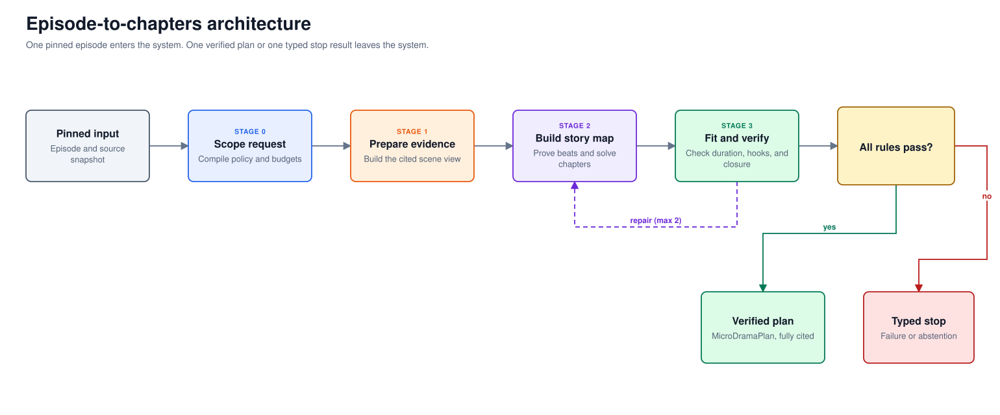
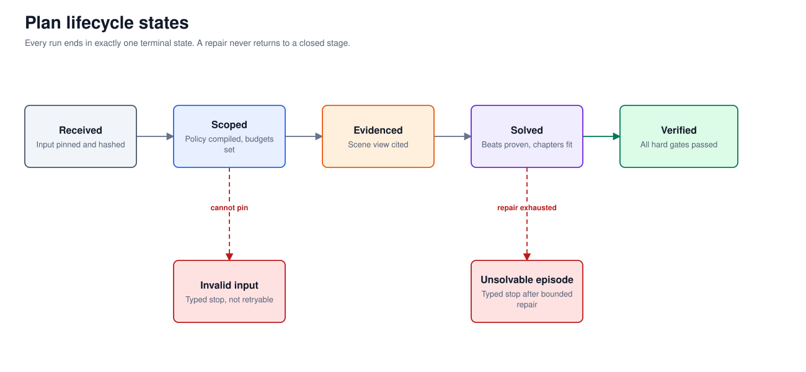

0 · Scope
Pin the input, compile policy, set budgets for duration, beats, and chapters.
Output: scoped request
One pinned episode enters the system. One verified plan or one typed stop result leaves it. This plan specifies the four stages, their contracts, the terminal states, and the gate that decides between them.
Every section of this plan, one click away. The document reads standalone in this order.
The service compiles a chapter plan from a pinned episode. Each stage has one input contract, one output contract, and one failure mode it must report.
Pin the input, compile policy, set budgets for duration, beats, and chapters.
Build the cited scene view. Every claim in the plan points at a source span.
Prove the beats and solve chapters against the budgets. Repair is bounded to two passes.
Fit the output and apply the hard gates. A failure emits a typed stop, never a partial plan.
One term per concept. The same word keeps the same meaning in code, diagrams, and tests.
Two views of the same system: the stage flow with its gate, and the terminal states every run ends in.


Every required field is shown. No field is hidden behind an ellipsis. Schemas are normative.
runResult:
status: VERIFIED_PLAN | TYPED_STOP_INVALID | TYPED_STOP_UNSOLVED
inputRef: episode-001
outputRef: plan-001
hardGates:
- name: citations_resolve
passed: true
- name: budgets_fit
passed: true
- name: no_orphan_beats
passed: true
warnings: []
provenance:
sourceHash: sha256:9f2c…e71a
schemaVersion: v2
repairPasses: 0evidenceView:
inputRef: episode-001
spans:
- spanId: span-014
startOffset: 5210
endOffset: 5890
kind: dialogue
citation: "ep1 00:52-00:58"
coverage: 0.93hardGates list is invalid. The verifier must emit at least one gate record per run.Every run ends in exactly one state. A typed stop names the blocker; it never carries a partial plan.
| State | Badge | Meaning | Next action |
|---|---|---|---|
| VERIFIED_PLAN | verified | All hard gates passed. The plan is complete and cited. | Ship to rendering. |
| TYPED_STOP_INVALID | stop | The input could not be pinned or parsed. | Fix the source, resubmit. |
| TYPED_STOP_UNSOLVED | stop | Bounded repair exhausted. Beats remain unproven or budgets unfit. | Relax budgets or extend evidence. |
| PARTIAL (rejected) | invalid | Any result that carries a plan with a failed hard gate. | Never emit. Treat as a verifier bug. |
The method stays visible next to the cases. Good and bad output are stated per stage.
Replay one pinned input per stage. Change one field at a time and record the emitted state.
References resolve, every hard gate record is present, and the state is terminal and typed.
A partial plan, a missing gate record, or an untyped failure. All three fail the run.
One positive case and one typed negative case per stage gate before merge.
| Case | Input change | Expected state |
|---|---|---|
| T1 · valid episode | None. Pinned transcript. | VERIFIED_PLAN, three gate records, no warnings. |
| T2 · unpinnable source | Corrupt hash. | TYPED_STOP_INVALID, emitted at stage 0. |
| T3 · missing citation | Drop one span from the evidence view. | Repair pass, then TYPED_STOP_UNSOLVED. |
| T4 · budget overflow | Duration budget below the solved minimum. | Repair pass, then TYPED_STOP_UNSOLVED. |
| T5 · gate record missing | Verifier stub omits budgets_fit. | Invalid runResult. Verifier bug, blocked at review. |
| T6 · third repair pass | Force a third failure after two passes. | TYPED_STOP_UNSOLVED. The loop must not run again. |
A worked example pins the abstract contracts to concrete values.
Input episode-001 pins at sha256:9f2c…e71a. Stage 1 builds an evidence view with 41 spans and 0.93 coverage. Stage 2 proves 12 beats and solves 6 chapters in one pass. Stage 3 passes all three hard gates.
runResult:
status: VERIFIED_PLAN
inputRef: episode-001
outputRef: plan-001
hardGates:
- {name: citations_resolve, passed: true}
- {name: budgets_fit, passed: true}
- {name: no_orphan_beats, passed: true}
warnings: []
provenance:
sourceHash: sha256:9f2c…e71a
schemaVersion: v2
repairPasses: 0| Chapter | Duration | Beats | Citations |
|---|---|---|---|
| 1 · Arrival | 04:12 | 3 | span-001 … span-009 |
| 2 · The deal | 06:48 | 2 | span-010 … span-017 |
| 3 · Turn | 05:31 | 4 | span-018 … span-028 |
This plan is complete only when every line below holds in the running system.